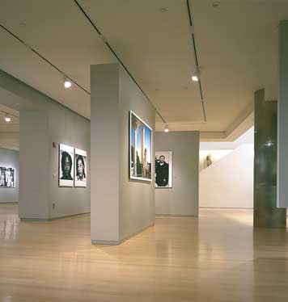

The Places You'll Go!
Woodlawn Cemetary
|  |
Cost:
|
||||||||||||
|
Since its founding in 1974 by Cornell Capa with help from Micha Bar-Am in the historic Willard Straight House, on Fifth Avenue's Museum Mile, ICP has presented over 500 exhibitions, bringing the work of more than 3,000 photographers and other artists to the public in one-person and group exhibitions and provided thousands of classes and workshops for tens of thousands of students. ICP was founded as an institution to keep the legacy of 'Concerned Photography' alive. After the untimely deaths of his brother Robert Capa and his colleagues Werner Bischof, Chim (David Seymour), and Dan Weiner in the 1950s, Capa saw the need to keep their humanitarian documentary work in the public eye. In 1966 he founded the International Fund for Concerned Photography. By 1974 it was obvious the Fund needed a home, and the International Center of Photography was created. ICP has seen enormous growth in its exhibitions, collections, education programs, and staff. In 1985, a satellite facility, ICP Midtown, was created to help accommodate this growth. Over the years, as ICP continued to develop, it became clear that further expansion wasnot possible in the Fifth Avenue location, and plans were made for the major redesign and reconstruction of the Midtown location to meet the challenges of the flourishing museum, educational and community programs. |
|||||||||||||